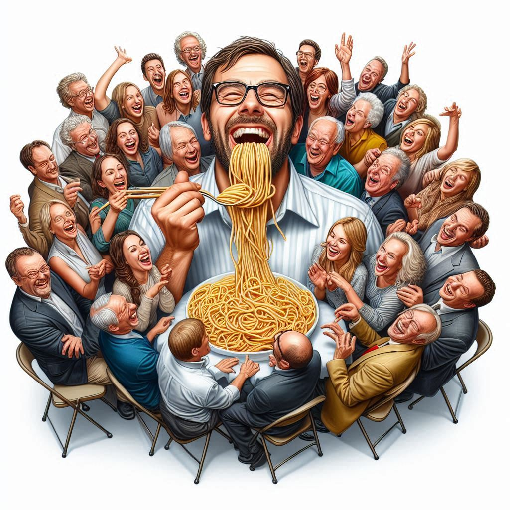
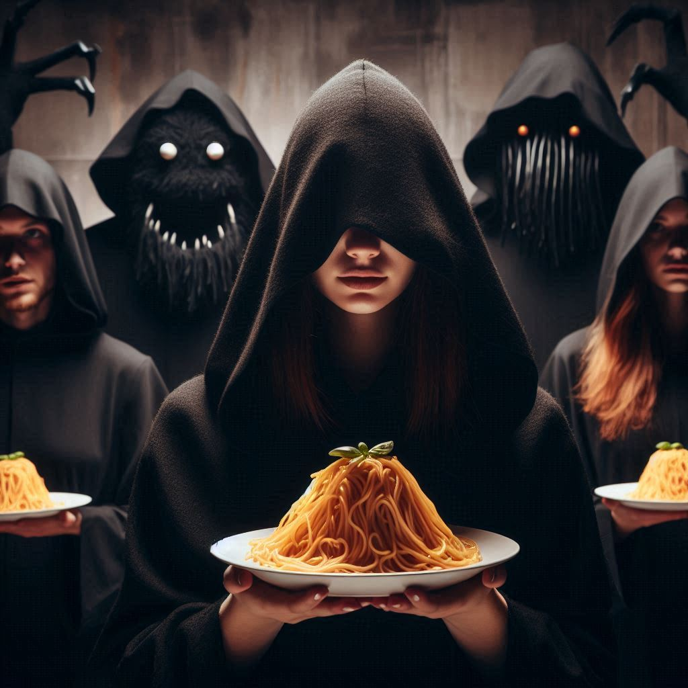
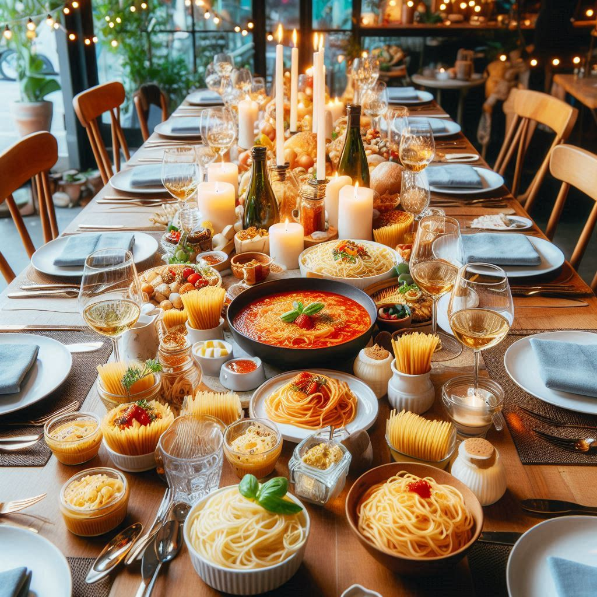
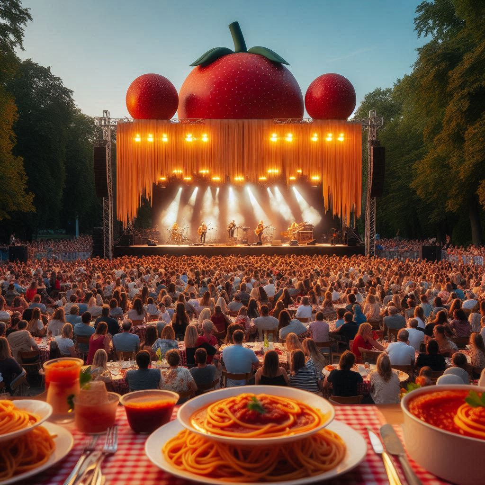
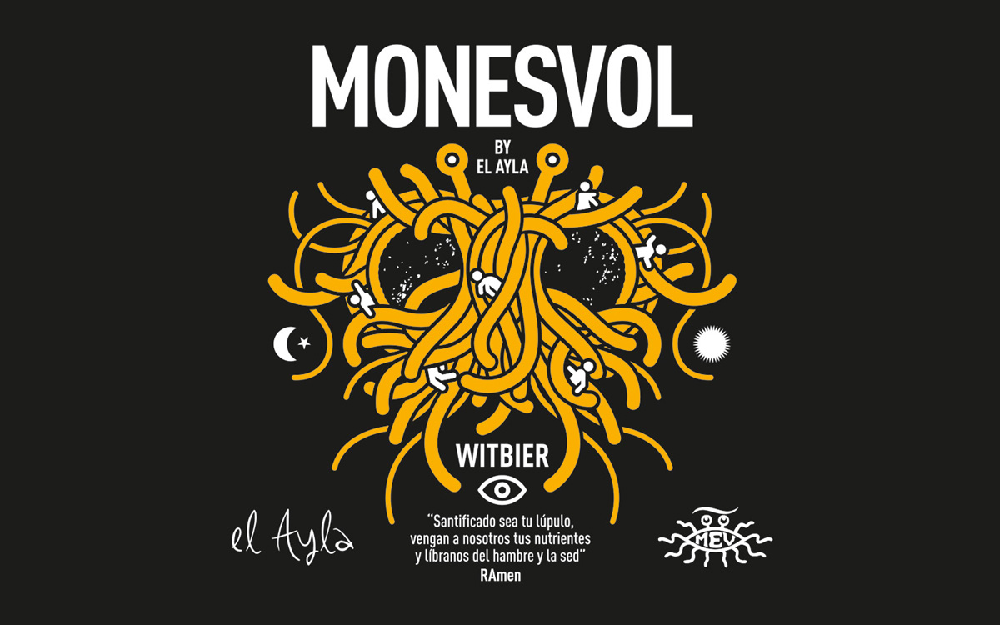

Risas y Diversión
El Pastafarismo promueve un ambiente de alegría y diversión. Al ser parte de esta comunidad, encontrarás amigos que comparten tu sentido del humor.
Comunidad Exclusiva
En nuestra comunidad, valoramos la lealtad y el compromiso de nuestros seguidores. Nos unimos para celebrar lo que significa ser Pastafariano, dejando de lado a quienes no comparten nuestras creencias.
Noche de Pasta
Disfruta de nuestras "Noches de Pasta", donde nos reunimos para compartir comida deliciosa y reír juntos. ¡Una tradición que no querrás perderte!
Beneficios Culturales
Participa en eventos culturales y actividades que fomentan el entendimiento y el respeto por todas las tradiciones, enriqueciendo tu experiencia como Pastafariano.
Cerveza Pastafariana
Disfruta de la Cerveza Pastafariana, una marca que celebra nuestra comunidad con cada sorbo. ¡Perfecta para acompañar tus comidas y alegrar tus noches de pasta!
Estadísticas Pastafarianas
Datos sobre el crecimiento de la comunidad Pastafariana a lo largo de los años.